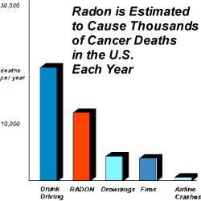
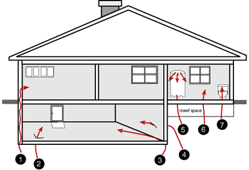

|
Radon Information
What is Radon?
Radon comes from the natural breakdown of uranium in soil, rock and water.
The release of this radioactive gas enters the air you breathe, causing a potential health risk to you and your family.
Radon gas can be found in just about anywhere. It can get into any type of building -- homes, offices, and schools -- and build up to high levels.
What you should know about Radon
Radon is a cancer causing radioactive gas.
You cannot see radon and you cannot smell it or taste it, but it may be a problem in your home. This is because when you breathe air-containing radon, you increase your risk of getting lung cancer. In fact, the Surgeon General has warned that radon is the second leading cause of lung cancer.
You should test for radon.
Testing is the only way to find out about your home's radon level. The EPA and the Surgeon General recommend testing of all homes below the third floor for radon.
You can fix a radon problem.
If you find that you have high radon levels, there are ways to fix a radon problem. Even very high levels can be reduced to acceptable levels.
If you are buying a home.
The EPA recommends that you obtain the radon level in the home you are considering buying. An EPA publication "The Home Buyer's and Seller's Guide" is available through most State Health Departments or Regional EPA offices listed in your local phone book. EPA also recommends that you use a certified or state licensed radon tester to perform the test. If elevated levels are found it is recommended that these levels be reduced. In most cases, a professional can accomplish this at reasonable cost or homeowner installed mitigation system that adheres to the EPA's approved methods for reduction of radon in a residential structure.

What are the Risk Factors?
The EPA, Surgeon General and The Center for Disease Control, have all agreed that continued exposure to Radon gas can cause lung cancer.
In fact, there position on the matter is that all homes should be tested for radon gas exposure, and all homes testing over 4 pCi/L should be fixed.
How Does Radon Enter the Home?
Typically the air pressure inside your home is lower than the pressure in the soil around your home's foundation.
Due to this difference, your house acts like a vacuum, drawing radon gas in through foundation cracks and other openings of your home.
Radon may also be present in well water and can be released into the air in your home when water is used for showering and other household uses.

Potential Entry Points:
- Cavities inside walls
- Cracks in solid floors
- Construction joints
- Cracks in walls
- The water supply
- Gaps in suspended floors
- Gaps around service pipes
|